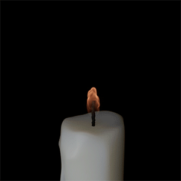

4.2.0
28 Jan 2021
MtoA 4.2.0 introduces Arnold 6.2.0.0 and is a feature release bringing light mixing, bloom and interactive denoising through imagers, OSL syntax highlighting to the OSL shader and an improved layout to the Arnold Render View.
This version breaks binary compatibility. Shaders, procedurals and other plugins compiled against Arnold 6.1 are not compatible with this version of Arnold and will need to be updated and recompiled.
MtoA 4.2.0 requires Bifrost 2.2.02
Installation
- Download the Arnold for Maya plugin
- Follow these installation instructions .
System Requirements
Maya 2018, 2019 or 2020
Windows 10 or later, with the Visual Studio 2019 redistributable.
Linux with at least glibc 2.17 and libstdc++ 4.8.5 (gcc 4.8.5). This is equivalent to RHEL/CentOS 7.
macOS 10.13 to 10.15. Note that macOS 11 Big Sur is not certified .
CPUs need to support the SSE4.1 instruction set.
GPU rendering works on Windows and Linux only and requires an NVIDIA GPU of the Ampere, Turing, Volta, Pascal, or Maxwell architecture. We recommend using the 460.39 or higher drivers on Linux and 461.40 (Quadro), 461.40 (GeForce) , or higher on Windows. See Arnold GPU for more information.
Optix™ denoiser requires an NVidia GPU with CUDA™ Compute Capability 5.0 and above.
Enhancements## Imagers:
[aiImagerDenoiserNoice]topicid=arnold_user_guide_ac_denoising_ac_imager_denoiser_html[aiImagerDenoiserOptix]topicid=arnold_user_guide_ac_denoising_ac_denoiser_optix_html[aiImagerLensEffects (bloom)]topicid=arnold_user_guide_ac_lens_effects_ac_lens_bloom_html[aiImagerLightMixer]topicid=arnold_user_guide_ac_post_processing_ac_light_mixer_html
Light Mixer imager : This new imager makes it possible to interactively edit the contribution of light group AOVs during and after rendering without restarting the render (core#9838).
Bloom in imager_lens_effect : The imager_lens_effect now implements a bloom effect. Bloom or glow is a post-processing effect that will blur pixels above a given threshold across the frame to simulate light bleeding on an imperfect lens. See the (core#9728).
** 
 **
**
Noice denoiser imager : The Arnold Noice denoiser is now also available as a post-processing effect. You can automatically denoise images every time you render a scene, edit the denoising settings and see the resulting image directly in the render view. Note that imager_denoiser_noice does not support temporal denoising (core#9718).
OptiX denoiser imager : The OptiX™ denoiser is now available as a post-processing effect. The imager also exposes additional controls for clamping and blending the result. (core#9719).
OpenColorIO v2 support: Arnold now uses an updated version of OCIO and is able to load and run OpenColorIO v2 configurations. It is fully backward compatible and will load and run existing configurations as before.(core #7827)
Up to 256 light AOVs supported: The number of supported light AOVs is now 256, it was 15 previously (core#7802).
**Faster cell_noise :** The cell_noise shader is now about 2.5x faster on CPU and 4.3x faster on GPU. In order to achieve this, we had to make a look-breaking change that manifests as a different random seed (core#9866).
New d efault values for Standard Surface : The base and base_color parameters on standard_surface are now respectively set to 1.0, and (0.8, 0.8, 0.8) by default. C hanging
baseto 1 after connectingbase_colorto a texture is such a common use case that it's better to swap the two defaults and avoid having to adjustbaseevery time (core #9128 standardsurface#15 )Improved progressive sampling: faster and higher-quality sampling improves progressive and adaptive rendering performance (core#10023).
Constant color detection in maketx: Added constant color detection to maketx. maketx/AiMakeTx will by default add the
--monochrome-detectflag (core#10179).OpenEXR maketx passthrough: OpenEXR file inputs to maketx/AiMakeTx will now by default generate an OpenEXR based .tx files instead of TIFF based .tx files.
--format tifor specifying a non-tx extension in the output filename will still allow for using other filetypes (core#6792).maketx allows by default half TIFFs : maketx / AiMakeTx will now by default allow creating TIFF based .tx files with half floats. Before, passing
-d halfwould by default produce a 32-bit float TIFF .tx file. Beware that most tools do not support half TIFF, so float TIFF or half OpenEXR should be used when the .tx file needs to be used outside of Arnold (core#6792).Faster maketx half TIFF generation: Generating half TIFF .tx files should be several times faster on certain Linux machines (core#10224).
Support for OSL shader metadata: Metadata from OSL shaders are now visible on Arnold nodes and can be read via the AiMetadata APIs (core#6718).
Limit number of per-light log messages : If there are more than 100 lights, we stop outputting per-light sampling log messages at the regular log verbosity and instead only output these at debug level verbosity. This should help avoid "spamming" the logs when there are many lights in a scene (core#10098).
Faster Autodesk Analytics Program : ADPClientService should upload data more quickly and consume fewer CPU resources, especially when there is no internet access (core#9776).
Updated single-user licensing : Autodesk Desktop Licensing has been updated to version 11.0.0.4854. This version is not compatible with previous Arnold versions and should be installed automatically from plugin installers if single-user licensing is used, or can be updated manually from the Arnold License Manager . It is required only for single-user licensing, network licensing (AdskFlex) and RLM are not affected (core#289).
More accurate crash report: When crashes occur while Arnold is running, a stacktrace is printed out. The stacktrace report should now be more reliable and slightly easier to understand (core#9156).
More profile blocks added: Most of the Arnold API now has associated profiling blocks so it is easier to determine which Arnold components are consuming the most render time (core#10272).
Interactive imagers in kick: kick now displays imagers in interactive mode (core#9836).
Faster Apple M1 performance: Arnold should now be able to properly use both the big and small M1 cores (still under Rosetta2) (core#10062).
OpenVDB 7.1: Arnold now uses OpenVDB 7.1. More information about the changes between OpenVDB 4 and 7.1 can be found here . (core #9861)
OSL Syntax highlighting : The OSL code editor now has syntax highlighting in the OSL node
Arnold Render View

Post-Processing Imagers in the Arnold Render View : Arnold Render View now has the ability to add/remove/edit Imager nodes in the Maya Scene.
Arnold Render View Layout changes - Arnold Render view now has the ability to resize the side panel and snapshots panel
GPU Enhancements
- Shadow groups : Support for shadow groups has been added (core#9898).
- Improved start-up times : This version improves the initial startup time when rendering a scene for the first time. On some scenes, we measured up to a 2x speedup in startup time, as well as a 4% speedup in render time (core#10160).
- Report GPU memory used when there is a GPU crash: Running out of GPU memory is a common problem and can sometimes result in random error messages. We now report the amount of GPU memory that Arnold had available when it first started, which if low could indicate that other applications were using GPU resources and stopping those applications will allow Arnold to succeed, and also report the amount of memory available when the GPU crash occurred, which if low is highly suggestive of an out of memory condition. (core#10261).
USD Enhancements
- Prefix for Schema Attributes : Arnold schemas now prefix their attributes for better compatibility with built-in USD schemas. ( usd#583 )
- Inheriting from UsdGeomXformable : Arnold schemas now inherit from UsdGeomXformable instead of UsdTyped. ( usd#558 )
- Authoring extent : Extents on UsdGeom shapes are now correctly authored when using the USD scene format. ( usd#582 )
- Creating XForms : The USD scene format now correctly creates UsdGeomXform parents for shapes instead of UsdTyped. ( usd#629 )
- Per ray-visibility : The USD procedural now supports per-ray visibilities exported from Houdini. ( usd#637 )
- USD 20.11 : The USD procedural now uses USD 20.11. More information about the changes between 19.11 and 20.11 [can be found here . (core#10209)
Incompatible Changes
- Previous attributes to denoise an AOV, or the beauty, are no longer supported. Existing scenes using denoising will need to be setup with imagers now. Please refer to the [aiImagerDenoiserOptix]topicid=arnold_user_guide_ac_denoising_ac_denoiser_optix_html documentation for more details.
Dropped Windows 7 and 8 compatibility : This version of Arnold is not supported on Windows 7 and Windows 8.
Dropped CentOS/RHEL6 compatibility : Arnold now requires a Linux version with at least glibc 2.17 and libstdc++ 4.8.5 (gcc 4.8.5). This is equivalent to RHEL/CentOS 7.
Look change to thin film: We changed how the thin film values are clamped to avoid negative values, and as a result, thin film looks slightly more saturated in this version. (core#9982)
Look change to blackbody: A bug fix in blackbody emission math will cause a slight change in intensity and color, resulting in brighter values. This affects the blackbody shader and temperature color pickers. (core#10074)
Deprecated log callbacks: The following log callback functions are now deprecated : AiMsgSetCallback() , AiMsgAddCallback() , AiMsgResetCallback() . Client code should now use AiMsgRegisterCallback() and AiMsgDeregisterCallback() instead. (core#9891)
Removed AiPromptADPDialog() : The deprecated AiPromptADPDialog() function has been removed. Plugin developers should use AiADPDialogStrings() instead. (core#10169).
New d efault values for Standard Surface : The base and base_color parameters on standard_surface are now respectively set to 1.0, and (0.8, 0.8, 0.8) by default. (core #9128)
**cell_noise random seed change:** The cell_noise shader has a look-breaking change that manifests as a different random seed (core#9866).
White Balance imager: The imager_white_balance imager now correctly accounts for the rendering color space, resulting in small differences. (core#10006)
Bug Fixes
mtoa#4378 - arnoldExportAlembic -file does not support spaces
mtoa#4421 - Remove python3 incompatible iteritem calls
mtoa#4433 - Crash when generating .tx via autotx with new OCIO
core#10278 100% progress is not always printed.
core #10074 Blackbody: bad XYZ color normalization.
core #9982 Clamp negative values with thin_film and transmission.
core #10233 clip_geo: stops working if you tumble the camera in IPR.
core #9744 Crash due to out-of-memory when rendering.
core #10222 [GPU] Fix Arnold not being able to recover from recoverable exceptions.
core #10208 [GPU] Remove usage of scientific notation for log progress.
core #10175 Mix of two standard_surfaces with transmission hangs the render.
core #10149 Points should be visible in the viewport API in polygon mode.
core #10091 quad_light can produce rare black samples.
core #10283 Remove MacOS xcrun installation prompt when crash occurs.
core #10259 Report error code when NVML fails to initialize.
usd#592 Invalid face-varying primvars crash the render delegate.
usd#596 Invalid USD is produced if polymesh is made of triangles and nsides is empty.
usd#481 std::string, TfToken, and SdfAssetPath typed VtArrays are not converted when setting primvars.
usd#619 Several built-in render buffer types are not translated to the right Arnold AOV type.
usd#634 Fixing disappearing meshes when playing back animation.
usd#621 UVs not read from facevarying primvar if indexes are not present.
usd#638 Motion start and motion end is not set reading animated transformation.